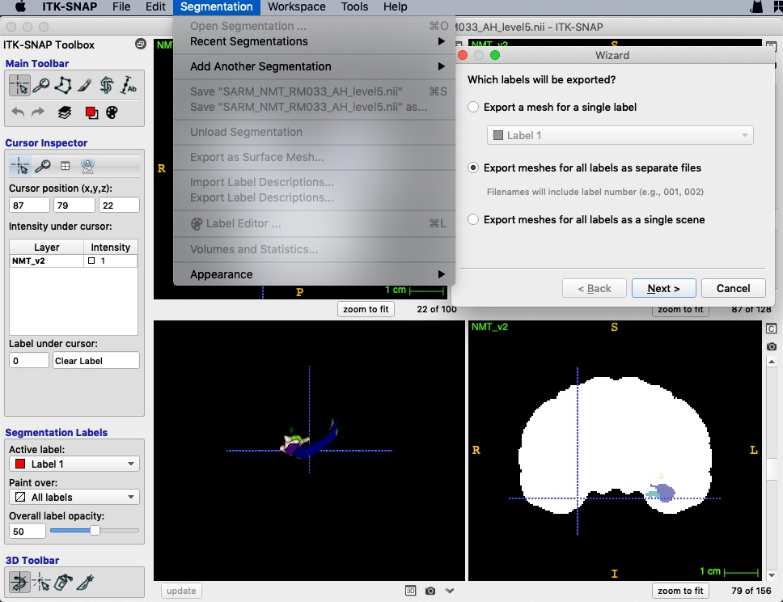
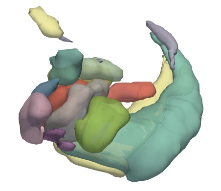

I found 3d visualization is really useful for understanding MRI results. Here is a brief guide which is mainly based on this paper.
First of all, we should convert nii files to VTK format using ITK-SNAP.

ParaView is an open source visualization application which could render VTK files as surface in 3d.
Group Datasets filter.